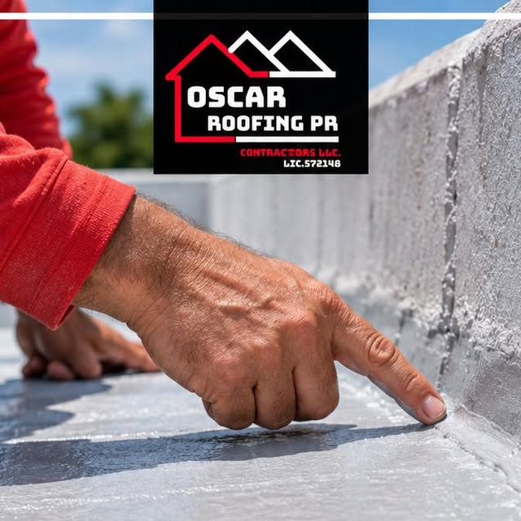
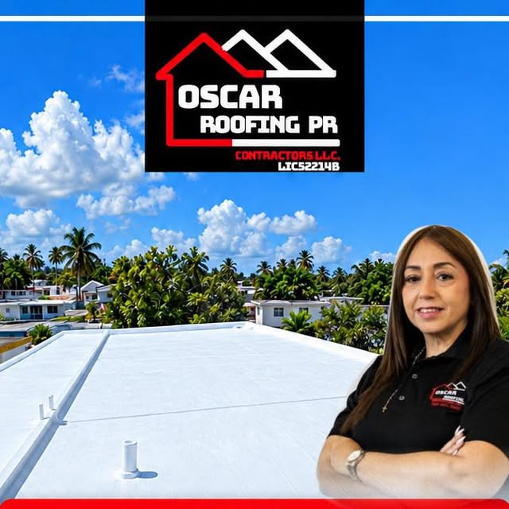
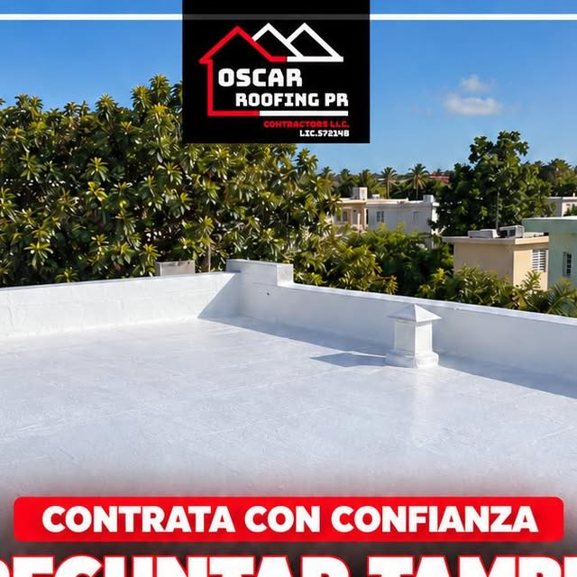
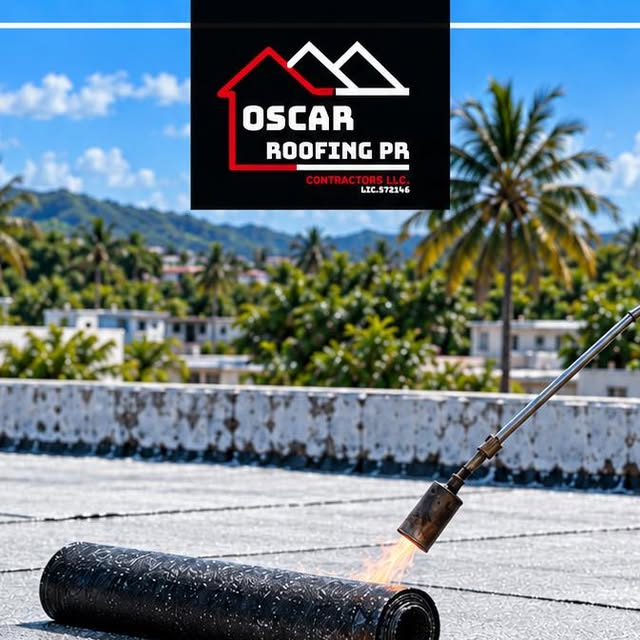
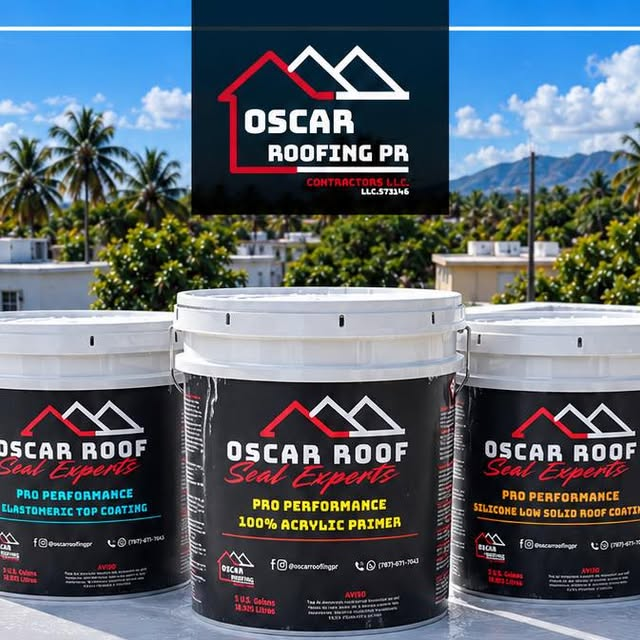
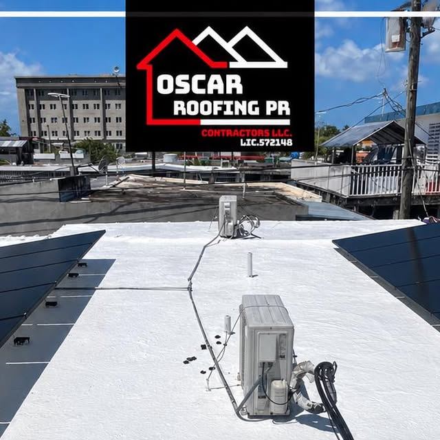
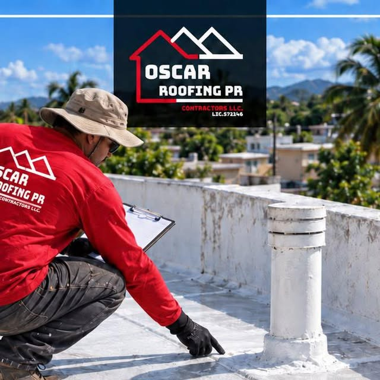

Resultados reales
Nuestros trabajos
Cada foto es un trabajo real en techos. Desliza la cinta y toca cualquier foto para verla grande.










← desliza para ver los trabajos →
Trujillo Alto, Guaynabo y área metro · Trujillo Alto
Sellado de techos en Trujillo Alto y Guaynabo: membrana asfáltica Danosa, corrección de filtraciones y garantía de 10 años. Licencia DACO 572148.
Resultados reales
Cada foto es un trabajo real en techos. Desliza la cinta y toca cualquier foto para verla grande.






← desliza para ver los trabajos →
Lo que hacemos
Del diagnóstico al sellado final: un solo equipo responsable de que tu techo quede seco.
Sellado completo para casas y negocios con garantía de 10 años por escrito.
SelladoInstalación de membrana Danosa: el sistema más robusto para techos de concreto.
DanosaFiltraciones localizadas y corregidas antes de sellar.
FiltracionesNivelamos las áreas donde se empoza el agua para proteger el sellado.
DrenajeMantenimiento programado para techos sellados.
MantenimientoGarantía por escrito de 10 años. Licencia DACO 572148.
GarantíaAsí de fácil
Mándanos fotos de tu techo por WhatsApp al 787-671-7043.
Visitamos en Trujillo Alto o Guaynabo y evaluamos a fondo.
Corregimos filtraciones y aplicamos la membrana Danosa.
Te entregamos la garantía por escrito. Lic. DACO 572148.

Licencia DACO 572148Quiénes somos
Oscar Roofing Contractors PR LLC: sellado de techos con licencia DACO 572148 en Trujillo Alto y Guaynabo. Membrana asfáltica Danosa, corrección de filtraciones y empozamientos, y garantía de 10 años por escrito.
Trabajo licenciado, techo garantizado por una década.
Preguntas frecuentes
Cubre el sistema de sellado instalado. Si filtra por falla del sistema dentro de los 10 años, lo corregimos. Por escrito.
Sí. Licencia DACO 572148.
Es un sistema de impermeabilización con membrana asfáltica de alta duración, ideal para techos de concreto en el clima de Puerto Rico.
Sí. Corregimos las áreas donde se empoza el agua para que el sellado dure.
Trujillo Alto, Guaynabo y área metropolitana.
Por WhatsApp al 787-671-7043.
Escríbenos por WhatsApp y cotiza el sellado de tu techo hoy mismo.
Cotiza tu sellado
Teléfono / WhatsApp
787-671-7043Área de servicio
Trujillo Alto, Guaynabo y área metro
Sellado de techos
Residencial y comercial
Llena esto y te abrimos WhatsApp con tu mensaje listo.
Cotización sin compromiso: dinos tu pueblo y el estado de tu techo, y te orientamos con el mejor plan.
Esta página la creó ManuPro. Escríbenos hoy mismo y cotiza la website profesional de tu negocio.
Cotizar por WhatsApp